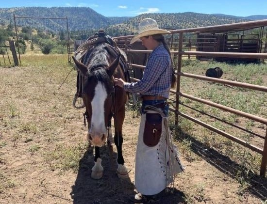

Meet Makaelyn
Makaelyn is a rodeo action and country photographer, who has made a name with her stunning action shots during rodeos and capturing the beautiful simpliciy of ranch hand living.
Makaelyns has always had a passion for country living and this helps her capture the best shots. She lives as she works, so the photagraphy is just a natural extention of her everyday life.
